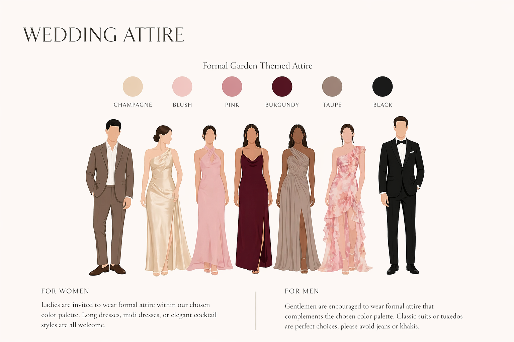

Wedding Attire Guide
Our wedding is a formal garden celebration. Black tie is optional, and we invite you to dress elegantly within our chosen colour palette.

For Women
Long dresses or formal jumpsuits in champagne, blush, pink, burgundy or taupe. Floral prints are welcome. Please avoid white and off-white shades.
For Men
Dark suits or tuxedos with ties or bow ties. Black tie optional. Please avoid denim or casual attire.